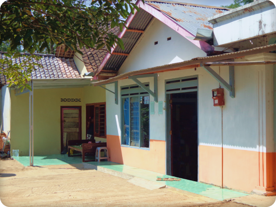

Idul Fitri 2023

Assalamu'alaikum Wr. Wb.
Dengan memohon rahmat dan ridha Allah SWT,
Melalui platform ini creator ingin memberi informasi seputar Anggota Bani Abdurrochman,
yang dapat dilihat dan didownload selengkapnya di link berikut :
Anggota Bani Abdurrochman
Jika ingin mencetak Album Bani Abdurrochman edisi ke-7 dapat mengikuti panduan
dan mendownload file pada link berikut :
Panduan dan File Cetak Buku
Sebelumnya creator memohon maaf jika ada tulisan atau penempatan yang kurang berkenan.
Kritik dan saran sangat dinantikan, melalui group WA Bani Abdurrochman atau email ke
bani.abdurrochman@gmail.com
Terimakasih!
Yuk kebawah lagi, masih ada cerita, lokasi bersejarah, galeri dan info tentang pengurus 😊

Cerita
Sekelumit Sosok Abdurrochman (Alm.)
Suatu sore hari kelihatan cerah langit kelihatan terang benderang tak ada mendung sedikit pun,
melainkan mega yang kelihatan berjalan dari barat ke timur, almarhum ayah duduk di kursi biru
yang berada di halaman, aku duduk di potongan kayu yang berdekatan juga dengan almarhum sambil
menunggu dan mengawasi kedua anak saya yang sedang asyik bermain-main, sedang ibunya anak-anak
masih di dapur untuk menyelesaikan masak untuk sore hari. Almarhum ayah .... (Selengkapnya
Klik disini)
- Mohammad Syahid (Alm.) -
dari Album Edisi 5
Lokasi Bersejarah
Rumah Tirtomoyo

Rumah yang terlihat biasa namun penuh memoria, rumah mbah Abdurrochman ini sudah berusia lebih dari setangah
abad
berlokasi di Cangkring Kidul, Tirtomoyo, Kec. Tirtomoyo, Kabupaten Wonogiri, Jawa Tengah, rumah yang
bersebrangan
dengan sungai ( Kali ) Alit masih kokoh berdiri meskipun sudah melalui beberapa kali renovasi.
Dirumah ini juga pernah menjadi salah satu saksi hidup dari anak-anak almarhum Bani Abdurrochman dan
cucu-cucu nya
berkumpul dan bersendau gurau
Galeri
Idul Fitri 2023
Idul Fitri 2018
Idul Fitri 2010
Idul Adha 2019
Idul Fitri 2014
Idul Adha 2018
Idul Adha 2014
Idul Adha 2012
Selengkapnya, Beberapa dokumentasi acara Bani Abdurrochman dapat diakses dibawah ini :
Idul Fitri 2023
Idul Fitri 2018
Idul Fitri 2014
Idul Fitri 2012
Idul Adha 2019
Idul Adha 2018
Idul Adha 2014
Idul Adha 2012
Pengurus
Di dalam setiap keluarga, ada kekuatan yang tak ternilai dari penghubung dan ikatan batin.
Bagian pengurus pertemuan keluarga hadir untuk memelihara keharmonisan dan memupuk
keakraban di antara anggota keluarga, melalui kerja sama dan koordinasi yang erat.
Bersama-sama, kita menciptakan kenangan indah dan menghidupkan
kembali ikatan keluarga yang takkan pernah pudar.
Berikut Susunan Pembina :
=== Ketua ===
H. Muh. Suhadi, S.Kom.
=== Wakil Ketua ===
Safandi, S.Pd
=== Bendahara ===
Hj. dr. Farida Nurhayati, Sp. T.H.T.B.K.L., M.Kes.
=== Sekertaris ===
Harun Al Rasyid, S.T.
=== Humas ===
Fardian Mohamadi, S.T.
Berikut Susunan Pengurus Sekarang :
=== Ketua ===
dr. A. Nafsi Setiawan, MARS
(perwakilan kel. Siti Zaenab (Alm.))
=== Wakil Ketua ===
Galendra Alkha A., S.Pd.
(perwakilan kel. Moh. Syahid (Alm.))
=== Sekertaris 1 ===
Kati Pratika Sari
(perwakilan kel. Muh Sahudi (Alm.))
=== Sekertaris 2 ===
Anidya Ayu Safitri, S.Tr.Par.
(perwakilan kel. Siti Aminah (Alm.))
=== Bendahara 1 ===
Fauzan Adhi Rachman, S.T., M.BA.
(perwakilan kel. Imam Nurhadi (Alm.))
=== Bendahara 2 ===
Fadila Daffa Ahmadi
(perwakilan kel. Muchti Muchamadi (Alm.))

"Kenangan indah bersama keluarga dan silaturahmi yang terjalin selalu memberikan kehangatan di dalam
hati.
Biarkan itu mengalir dalam setiap pertemuan yang akan datang, dan selalu menjaga kebersamaan"
Bani Abdurrochman,